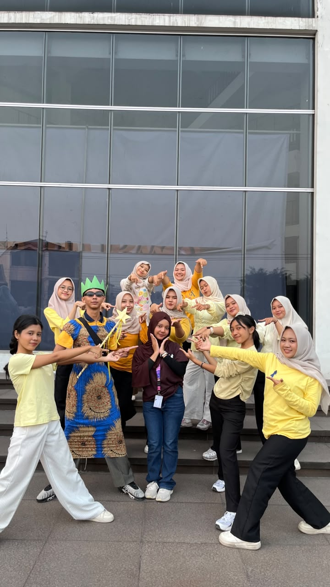
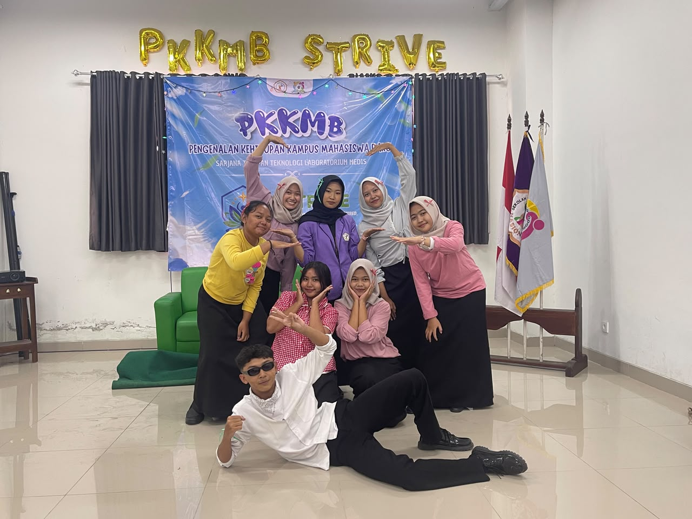
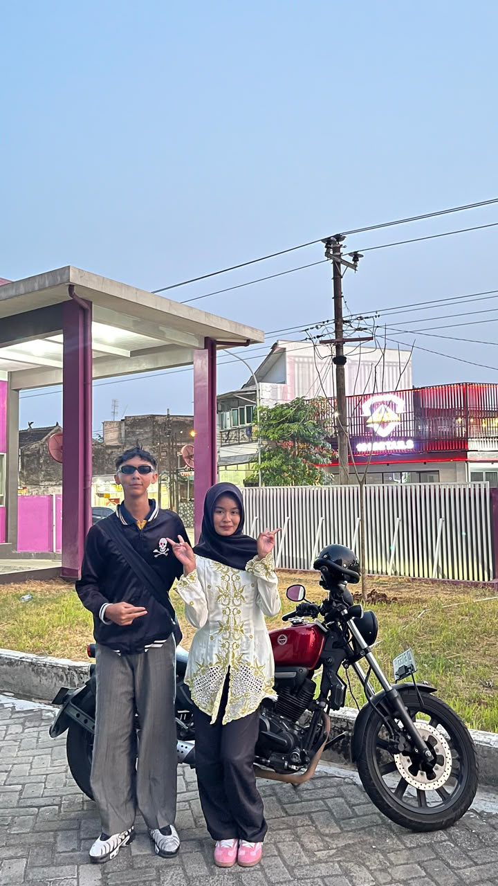

SELAMAT DATANG DI
Prakarsa Berkarya, Wikrama Membara, Mahardhika Nusantara
Mengenal lebih dekat kegiatan PKKMB tahun 2026
Layaknya emas yang bernilai tinggi dan terus ditempa hingga menjadi semakin kuat, mahasiswa diharapkan mampu mengembangkan diri melalui pendidikan, pengalaman, dan pengabdian.
Dengan semangat persatuan dalam keberagaman, mahasiswa menjadi generasi unggul yang siap memberikan manfaat bagi masyarakat, bangsa, dan negara.
Membangun kepercayaan diri dan mental juara mahasiswa baru.
Mempersiapkan mahasiswa baru menghadapi kehidupan perguruan tinggi.
Membantu mahasiswa baru beradaptasi dengan lingkungan dan kehidupan perguruan tinggi.
Meningkatkan kesadaran berbangsa, bernegara dan cinta tanah air.
Membentuk karakter mahasiswa yang berintegritas dan bertanggung jawab.
Mendorong mahasiswa mengembangkan potensi dan kemampuan diri.
Hal-hal yang perlu diperhatikan peserta PKKMB
Mahasiswa baru STIKES Nasional tahun akademik 2026.
Peserta wajib mengikuti seluruh rangkaian kegiatan PKKMB.
Peserta wajib menaati tata tertib dan arahan panitia.
Menjaga sopan santun, menerapkan 5S dan menjaga nama baik STIKES Nasional.
Rangkaian kegiatan resmi PKKMB STIKES Nasional 2026
08.00 – 12.00 WIB
📍 Pentagon, Kompleks Kampus STIKES Nasional07.00 – 16.30 WIB
📍 Pentagon, Kompleks Kampus STIKES Nasional07.00 – 17.00 WIB
📍 Pentagon, Kompleks Kampus STIKES NasionalInformasi dasar yang wajib diketahui peserta
Datang tepat waktu, mengikuti rundown dan menaati seluruh peraturan PKKMB.
Menggunakan pakaian sesuai ketentuan pada setiap tanggal kegiatan.
Senyum, Salam, Sapa, Sopan dan Santun selama kegiatan.
Dilarang membawa rokok, alkohol, narkoba, senjata dan barang terlarang lainnya.
Persiapkan seluruh tugas sebelum kegiatan berlangsung
Video perkenalan minimal 2 menit dengan format portrait sesuai ketentuan buku panduan.
Gunakan twibbon resmi PKKMB SWARNANUSA 2026.
Membuat co-card sesuai ukuran, bahan dan ketentuan yang ditetapkan panitia.
Menyelesaikan tugas kelompok sesuai materi dan tanggal kegiatan.
Membuat resume materi sesuai ketentuan buku panduan.
Mempersiapkan penampilan Swarnaloka maksimal 10 menit.
Dokumentasi kegiatan PKKMB

Momen kebersamaan mahasiswa dalam kegiatan PKKMB.

Dokumentasi kegiatan dan semangat mahasiswa.

Momen kebersamaan dan kegiatan PKKMB.
Beberapa pertanyaan yang sering ditanyakan
PKKMB Institusi dilaksanakan pada 14–16 September 2026, kemudian Pekan Raya pada 19 September 2026.
Kegiatan dilaksanakan di Pentagon, Kompleks Kampus STIKES Nasional.
Ya. Peserta wajib mengikuti seluruh rangkaian kegiatan sesuai ketentuan panitia.
“Building the Confidence and Champions Mentality”.
Hubungi mentor atau panitia sesuai ketentuan komunikasi yang terdapat pada buku panduan PKKMB.